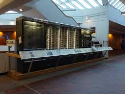

L'Harvard Mark I
L'Aiken-IBM Automatic Sequence Controlled Calculator Mark I
(comunemente abbreviato ASCC, soprannominato Harvard Mark I)
è uno dei primi computer digitali elettromeccanici della storia.
L'Harvard Mark I è stato completato nel gennaio 1943,
finanziato dall'IBM e progettato da Howard Hathaway Aiken,
del dipartimento di fisica dell'Università di Harvard (Cambridge),
che venne affiancato nel suo lavoro dagli ingegneri meccanici C. D. Lake,
F. E. Hamilton e B. M. Durfee.
